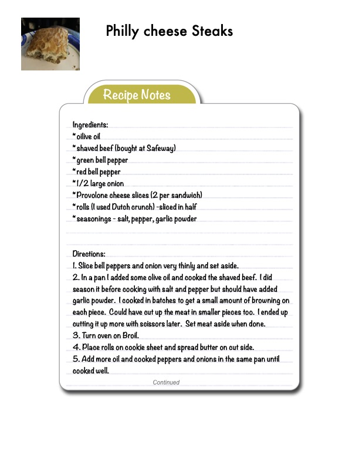

Philly cheese Steaks

Original cookbook page 829
Ingredients
- olive oil
- shaved beef (bought at Safeway)
- green bell pepper
- red bell pepper
- 1/2 large onion
- Provolone cheese slices (2 per sandwich)
- rolls (I used Dutch crunch) - sliced in half
- seasonings - salt, pepper, garlic powder
Instructions
- (. Slice bell peppers and onion very thinly and set aside.
- [n a pan [ added some olive oil and cooked the shaved beef. I season it before cooking with salt and pepper but should have < garlic powder. I cooked in batches to get a small amount of bro each piece. Could have cut up the meat in smaller pieces too. ( cutting it up more with scissors later. Set meat aside when don
- Turn oven on Broil.
- Place rolls on cookie sheet and spread butter on cut side.
- Add more oil and cooked peppers and onions in the same pa cooked well. Continued
Recipe #829 from collection